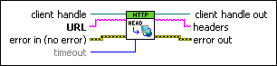

HEAD VI
Owning Palette: HTTP Client VIs
Requires: Base Development System
Sends a Web request that returns headers from a server, Web page, or Web service. This VI uses the HEAD HTTP method. This VI does not submit any data to the server or receive body data. The minimal data exchange makes the HEAD VI useful for testing the validity of a URL.
You can assign a client handle to add authentication credentials, HTTP headers, or a cookie to Web requests made by the HEAD VI. Use the OpenHandle VI to open a client handle and establish credentials. Use the AddHeader VI to add header lines to Web requests made by the HEAD VI.

 Add to the block diagram Add to the block diagram |
 Find on the palette Find on the palette |